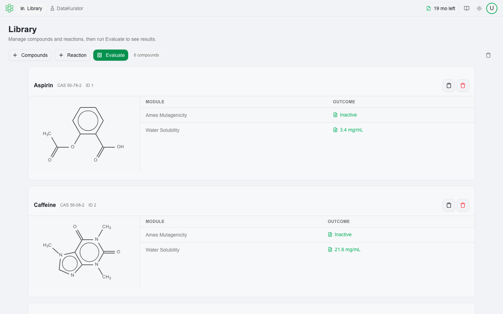

The desktop application you have been running was a Windows program with its own interface. 4.0 replaces it with the interface QSAR Flex uses on the web, wrapped in a native application for Windows and macOS. Nothing you have saved is affected.
A single bar across the top carries Library and DataKurator on the left, a Search box in the middle, and your license status, documentation and theme on the right. There are no menus above it and no toolbars below it.
The Library holds the compounds and reactions you are working on and is where you evaluate. DataKurator is where you clean a set before it gets there. You move between them with the two tabs, and work is kept on both.
Press ⌘K or Ctrl K and type. It searches every action in the product and runs it from wherever you are, naming where each control lives. It is the fastest way to find a feature you cannot see.

Left to right along the bar: the Library and DataKurator tabs, the Search box that the command bar opens behind, then your license status, the documentation button and the light/dark toggle. Below it, + Compounds, + Reaction and Evaluate, and one card per compound with its structure beside its outcomes. Clicking an outcome opens the report.
The interface is new. The chemistry underneath it is not. If you have validated a QSAR Flex result, 4.0 does not move it.
| The models | The same statistical models, expert alerts, read-across and rule-based methods, with the same applicability-domain and uncertainty handling. |
| The endpoints | The same catalog: sixteen modules in four bundles, Nitrosamine, Ecotoxicity, Physicochemical and ADME. |
| The results | Predictions, reports and their supporting evidence come from the same engine. Every record count and every number a model returns is the same. |
| The license types | Individual or Enterprise coverage, and still Subscription, On-Demand Subscription and Pay-Per-Test, with the same module and bundle entitlements. |
| Sign-in and data | Still your MultiCASE account. There is no data migration and no license re-issue, and the desktop application still evaluates on your own machine. |
The interface in 4.0 is the one QSAR Flex has been running in the browser, and your license covers it. Sign in at qsarflex.multicase.com with the same account: nothing to install, nothing to download, and it stays current on its own. It suits people who move between machines, or a colleague who needs occasional access without a deployment.
Two differences worth knowing. The web application sends your structures to MultiCASE to be evaluated, where the desktop evaluates them on your own machine and sends none. And Surrogate Search and Cross Similarity are desktop-only, because they read across the whole reference database rather than fetching one record. If structures may not leave your network, stay on the desktop.